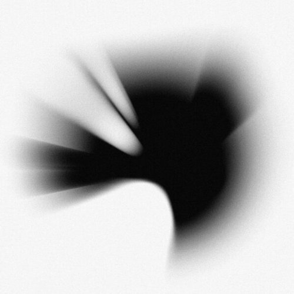

Chester Charles Bennington (Phoenix, 20 de março de 1976 – Palos Verdes Estates, 20 de julho de 2017) foi um cantor, compositor, ator e vocalista da banda americana Linkin Park. Ele também trabalhou no grupo Dead by Sunrise e foi vocalista do Stone Temple Pilots entre 2013 e 2015.
Bennington ganhou notoriedade devido a sua carreira como vocalista da banda Linkin Park. No ano 2000, eles lançaram o disco Hybrid Theory, que se tornou um enorme sucesso de público e crítica. Em 2005, este álbum chegou a marca de 10 milhões de cópias vendidas apenas nos Estados Unidos. A banda lançou outros trabalhos bem sucedidos, como os álbuns Meteora (2003), Minutes to Midnight (2007), A Thousand Suns (2010), Living Things (2012), The Hunting Party (2014) e One More Light (2017).
Com todo o sucesso, Bennington focou também em vários trabalhos paralelos, como músico, produtor e ator. Ele formou sua própria banda, Dead by Sunrise, em 2005, lançando posteriormente um álbum com eles, Out of Ashes. Chester também trabalhou com bandas como Stone Temple Pilots, gravando um EP e fazendo shows com eles. Bennington foi reconhecido diversas vezes por seu trabalho como cantor, especialmente com o Linkin Park, sendo colocado pela revista Hit Parader na lista dos "Top 100 Vocalistas de Heavy Metal".
Era conhecido do público e da imprensa seus problemas pessoais, com drogas e álcool. Chester já tinha dito várias vezes usar a música como sua "válvula de escape". Mas após um período, decidiu se limpar e afirmou "não ser mais aquela pessoa", focando então ainda mais no trabalho e na família. Chester era pai de seis filhos (um adotado) que teve com três mulheres, sendo casado com sua última esposa, Talinda Ann Bentley, de 2006 até sua morte.
Em 20 de julho de 2017, Bennington foi encontrado morto em sua residência em Palos Verdes Estates, no sul da Califórnia. A causa da morte foi suicídio por enforcamento.
Discografia
Hybrid Theory

Meteora

Minutes to Midnight

A Thousand Suns
Living Things

The Hunting Party

One More Light
.jpg)